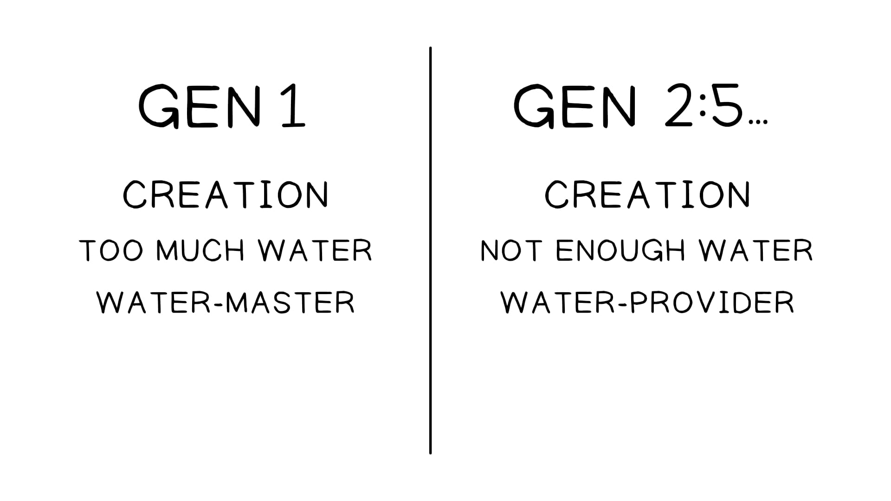

Esta sessão revisa o conteúdo das sessões 3 e 4. A história de Avraham repete a melodia temática de Gênesis 1-11 — criação e bênção, loucura/teste/fracasso, des-criação e re-criação — no nível macro, médio e micro de cada movimento. Reconhecer essa melodia é a chave para perceber as escolhas literárias dos autores: onde eles repetem o padrão e onde o subvertem para destacar a fidelidade ou a falha dos personagens.This session reviews content from sessions 3 and 4. The Avraham story repeats the thematic melody of Genesis 1-11 — creation and blessing, folly/test/failure, de-creation and re-creation — on the macro, medium, and micro level of each movement. Recognizing this melody is the key to perceiving the authors’ literary choices: where they repeat the pattern and where they subvert it to highlight the characters’ faithfulness or failure.
Retratos Complementares da Criação. Criado por Tim Mackie para a BibleProject Classroom: Abraham (2021).Complementary Portraits of Creation. Created by Tim Mackie for BibleProject Classroom: Abraham (2021).
Esta sessão revisa o conteúdo das sessões 3 e 4This session reviews content from sessions 3 and 4

Como conhecer a melodia de Gênesis 1-11 nos ajuda a entender a história de Avraham?How does knowing the Genesis 1-11 melody help us understand the Avraham story?